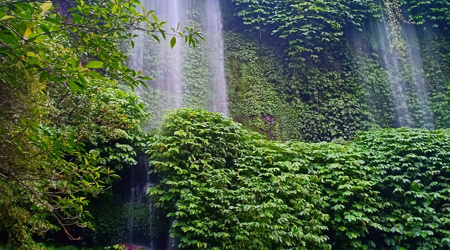
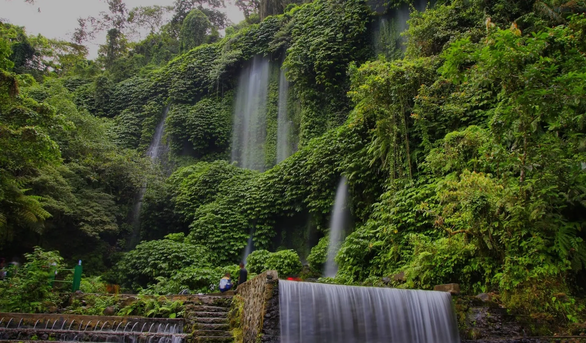
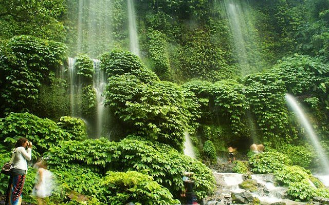
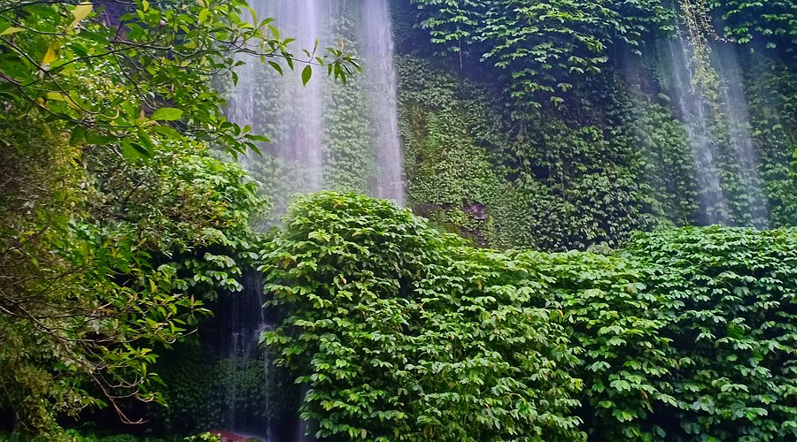
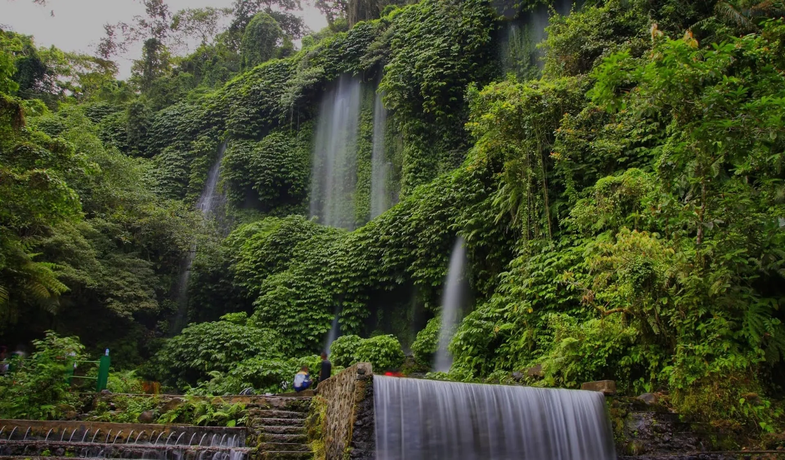
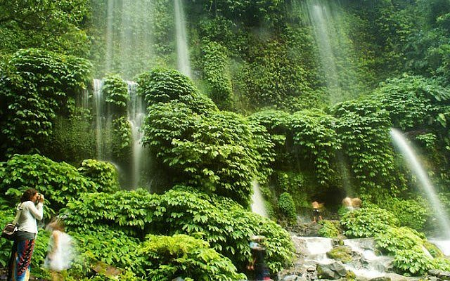
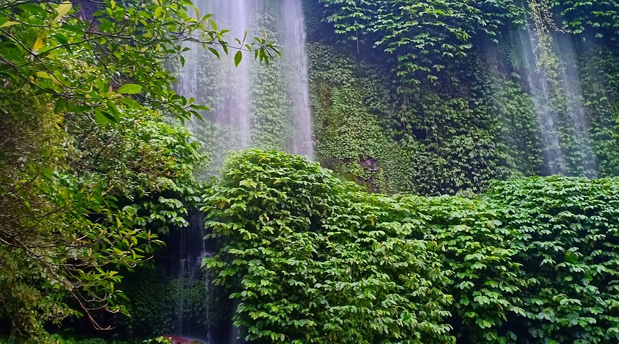
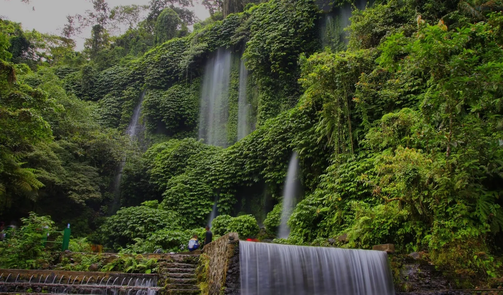
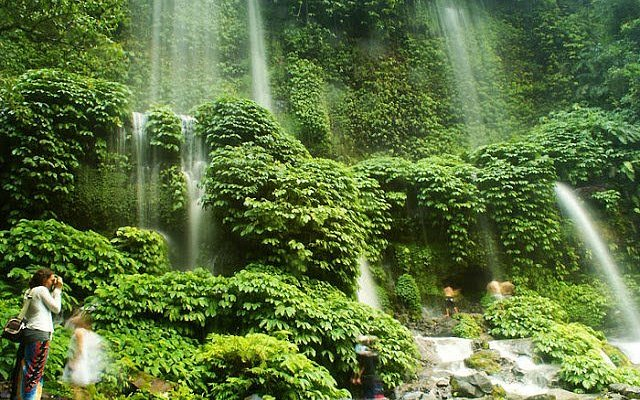
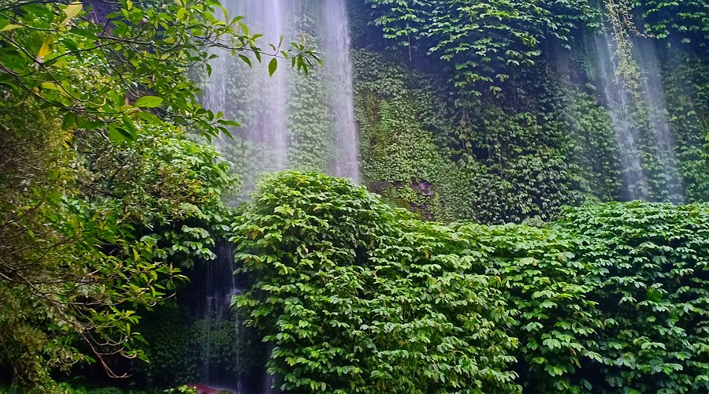
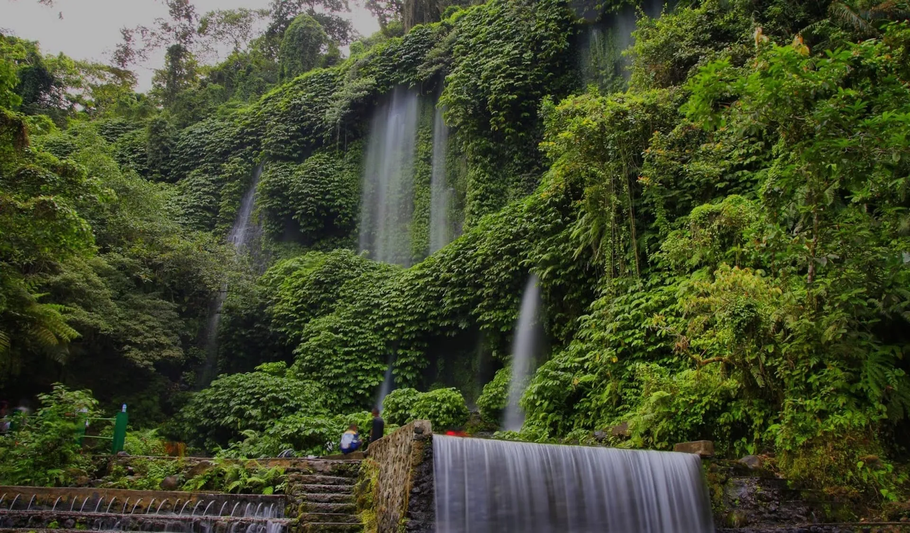
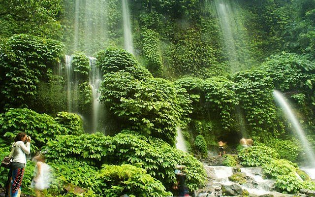
Air Terjun Benang Stokel terletak di kaki Gunung Rinjani, menawarkan pemandangan alam yang menakjubkan dengan udara sejuk dan nuansa hutan tropis. Air terjun ini cocok untuk relaksasi, foto-foto, serta hiking ringan. Nama "Benang Stokel" berarti "seikat benang", karena bentuk jatuhnya air menyerupai untaian benang.